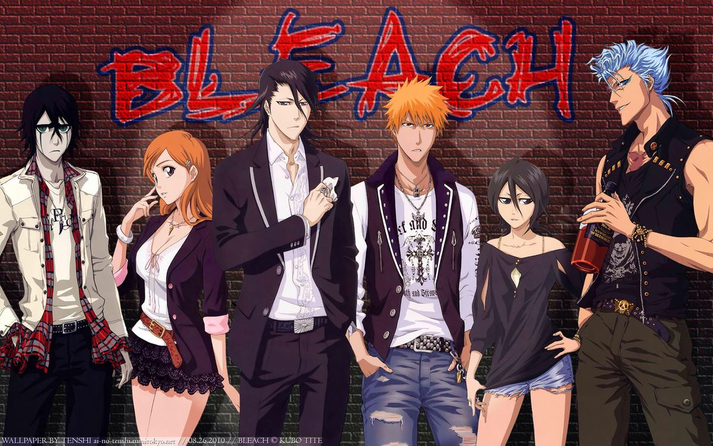

Bleach
Enciclopedia del mundo espiritual
Esta portada concentra varias de las categorias centrales de Bleach en un formato tipo wiki. Cada imagen te lleva a una ficha con contexto basico sobre facciones, armas y poderes clave del mundo espiritual de la serie.
Apartados